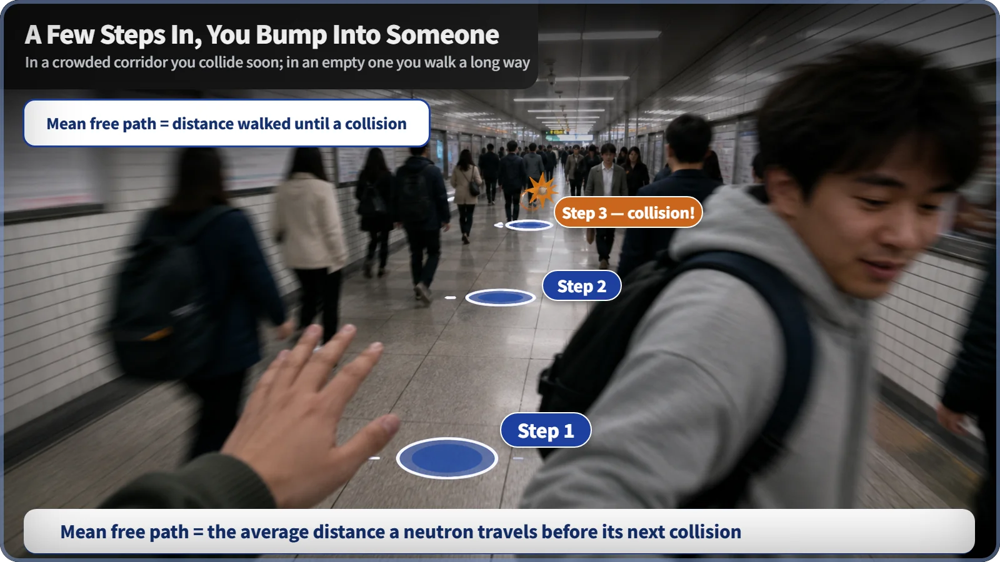
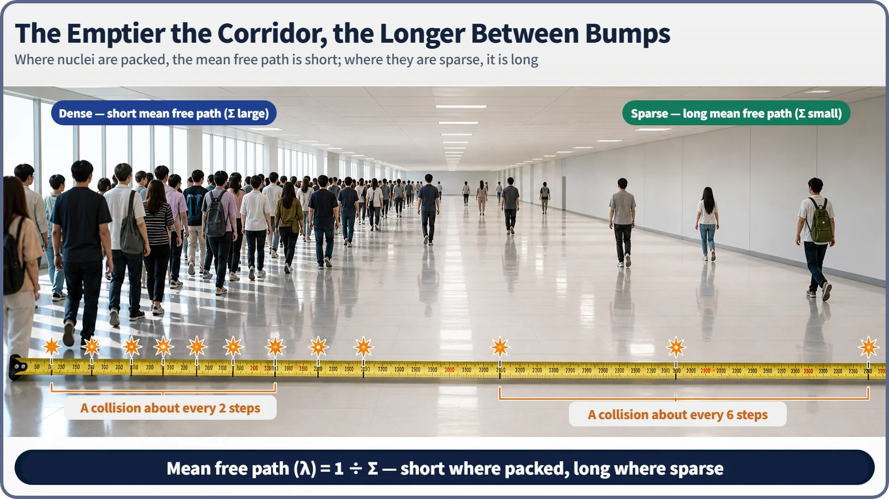

Neutron Physics & the Core · 079
Why You Bump Into Someone Every Few Steps — The Neutron's Mean Free Path
The more crowded the corridor of nuclei, the sooner a neutron bumps into one.
The mean free path is the average distance a neutron travels before its next collision with a nucleus. It is the inverse of the macroscopic cross section, λ = 1/Σ: the more tightly packed and reactive the nuclei, the shorter it gets, just as you bump into people sooner in a crowded corridor.
Crowded corridor, empty corridor
At rush hour in a packed subway passage, you barely take three steps before your shoulder brushes someone. Late at night in an empty office corridor, you can walk a long way without seeing a soul. The difference is density: how crowded the corridor is.
A neutron flying through a reactor has its distance to the next collision set in exactly the same way. That distance is called the mean free path.
Neutrons have corridors too
To a neutron, the material in the core, whether water, graphite or uranium fuel, is a corridor full of nuclei, packed closely or spread thinly. The neutron travels in a straight line until it runs into one (a collision, or reaction). The distance it travels to that collision, averaged over a very large number of neutrons, is the mean free path.
Where nuclei are tightly packed and react readily, a neutron barely gets anywhere before hitting one: the mean free path is short. Where nuclei are sparse or don't react readily, it travels a long way first: the mean free path is long.

The macroscopic cross section Σ describes how readily the nuclei of a whole medium react with neutrons. The mean free path is exactly its inverse:
Mean free path (λ) = 1 ÷ Σ
Large Σ means small λ, small Σ means large λ: the denser the crowd, the shorter the gap between bumps. Because Σ is measured in cm⁻¹, λ comes out in centimeters.
Why it's called the mean free path
Individual neutrons travel very different distances: some collide almost at once, others go quite far. The distances follow a set pattern, with a collision most likely over a short distance and the probability falling off exponentially as the distance grows. Look at one or two neutrons and the distances are all over the place; average over the countless neutrons in a reactor and the result settles exactly at 1/Σ.
Every material has its own corridor
Σ is the product of how tightly nuclei are packed (number density, N) and how readily each one reacts (microscopic cross section, σ): Σ = Nσ, so λ = 1/(Nσ). If either grows, the corridor gets more crowded and the mean free path gets shorter.
| Material situation | Σ | Mean free path |
|---|---|---|
| Tightly packed, reactive nuclei (moderators such as water or graphite) | relatively large | short: a collision after a few steps |
| Low density or weakly reacting nuclei | small | long |
A short mean free path in a moderator is not a bad thing: it means the moderator is quickly bringing the neutron's energy down, which is its job. Actual values in centimeters depend on neutron energy and temperature, so the comparison here stays qualitative. Even in the same material, a fast neutron and a thermal neutron have different mean free paths, so the value belongs to the combination of a material and a neutron energy, not to the material alone.

Easy things to mix up
Mean free path is not range. A charged particle such as an alpha particle loses energy continuously and gradually stops; that stopping distance is its range. A neutron reacts only when it meets a nucleus, instantly and discontinuously. The mean free path answers how far it travels, on average, until the next collision, not how far it can go.
It is not a fixed constant of a material. It depends on neutron energy and on which collisions are counted: there is a total mean free path for all reactions, and separate values for scattering only or absorption only.
Why it matters
The mean free path is a basic measuring stick in reactor design: how closely to arrange fuel, moderator and coolant, how thick the core or reflector must be so neutrons get enough chances to react before leaking out, and how thick a shielding wall must be. Operators don't adjust it during operation; it is built in at the design stage through the choice and arrangement of materials.
Key takeaways
The mean free path is the average distance a neutron travels before its next collision. λ = 1/Σ: short where nuclei are tightly packed or reactive, long where they are sparse. It depends on neutron energy and material, and it is a basic yardstick for core and shielding design.